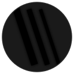
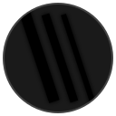
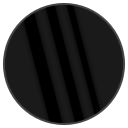
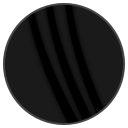
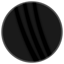

D2 — No animation
The base logo for comparison.
Animation concepts
The gasoline flame works because it's frame-swapped (not interpolated), with glow + color temp + scale all changing per frame. These concepts explore that organic quality.
Hot spot travels top-to-bottom, staggered across strings. 1.2s cycle.
Same but 2s cycle. More meditative.
Wider hot spot (25% of line). Softer wash.
Pulse travels bottom-to-top. Rising energy.

Lines glow + color shift, drifting phase. Circle stays fixed.

Ember color shift + each line breathes (thickens) staggered via different durations.

Same animation, all 3 lines span edge-to-edge across the circle.
Outer lines shorter, middle spans full. Staggered length effect.
Double-beat per line + ember color shift. Timings matched per string.
Even-width curved tapered strings, our colors.
Descending widths, same curved taper.

Ember + breathe, staggered (2.5/2.8/3.1s).

Same effect, ~1.5s cycle.
Same effect, ~0.7s cycle.
The base logo for comparison.